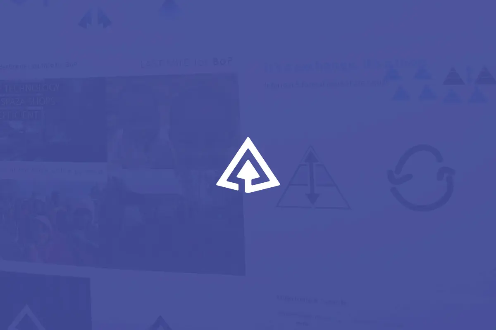
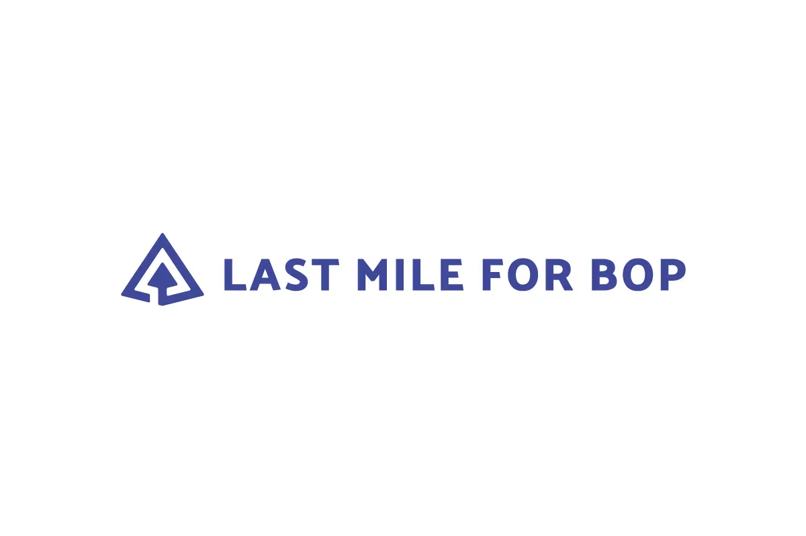
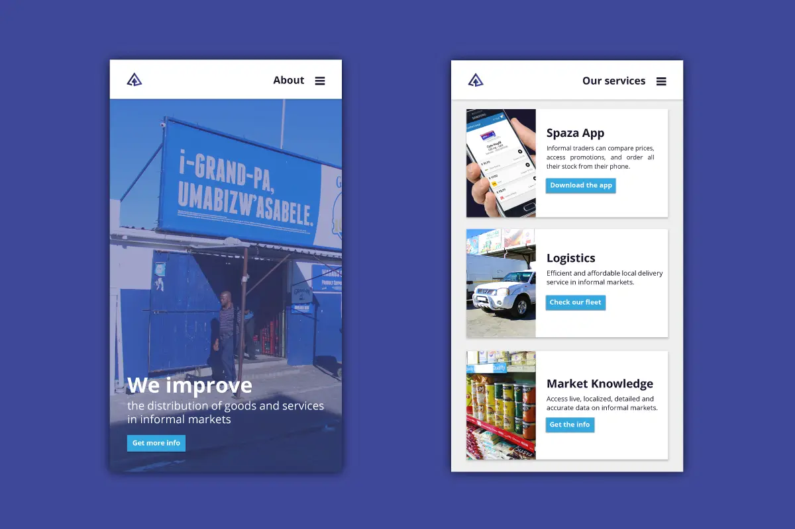
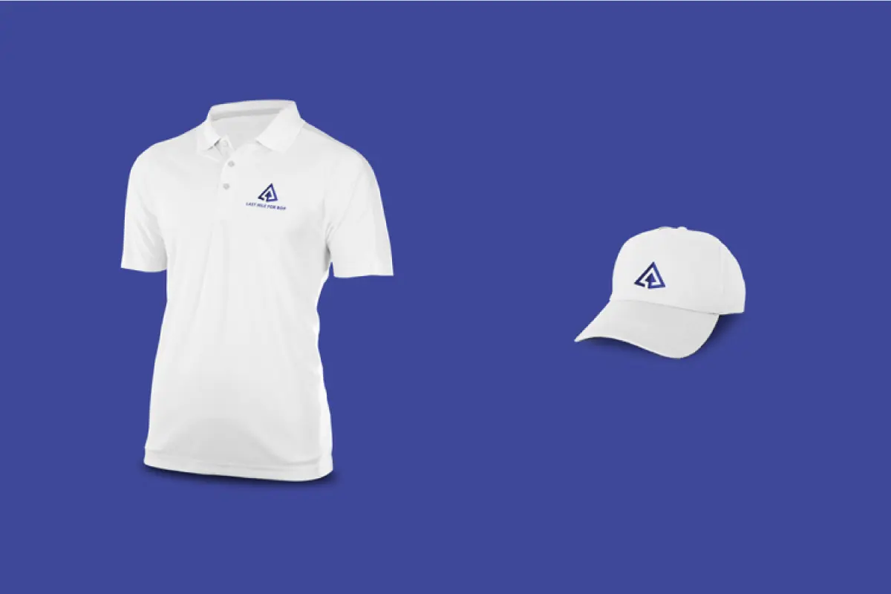

Last Mile For Bop
New graphic identity
From December to March, I did a 3-month-internship at Last Mile for BoP as Graphic Designer and UI/UX Designer. The aim of this South African startup is to improve the distribution of affordable products and services in low-income communities (at the base of the pyramid) by modernizing the informal grocery stores (spazashops) in Cape Town.
Why rebrand?
Since its creation in 2013 by Arnaud Blanchet, the startup evolved through time and so had to expand its goals. We concluded it was time to rebrand the full identity of Last Mile For BoP: a new image for 2017 corresponding to its new values and making its objectives more clear on the market.
Year
December 2016
Lire en Français 🇫🇷